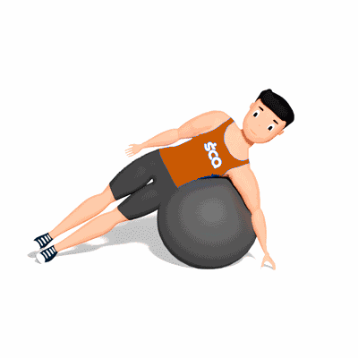

Flexão Lateral de Tronco na Bola Suíça

O exercício tem como objetivo fortalecer os músculos do abdome, como também trabalhar o equilíbrio do corpo.
Ficha Técnica
Tipo: Funcional
Grupo Muscular: Abdome
Aparelho: Nenhum
Músculos: Nenhum
Como realizar
- Deite-se de lado e apoie o tronco em cima de uma bola suíça;
- Se desejar, pode colocar os pés contra uma parede para ajudar a manter o equilíbrio;
- Flexione a cintura de forma lateral em direção à anca;
- Inverta o movimento e depois repita durante o número de repetições orientada pelo professor(a);
- Ao acabar, vire e trabalhe o lado oposto.
 RC STORE
RC STORE